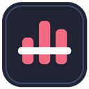

Now playing
Waiting for YouTube Music
Volume

For YouTube Music · Stream Deck integration
Waiting for YouTube Music
Install the Stream Deck plugin to use Stream Deck controls.
Generate a PIN in Stream Deck action settings and enter it here.
Use the same port as Stream Deck. When connected, changing it here also updates the server.